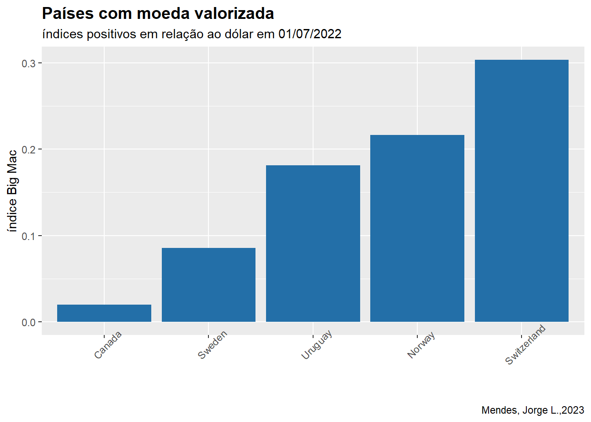
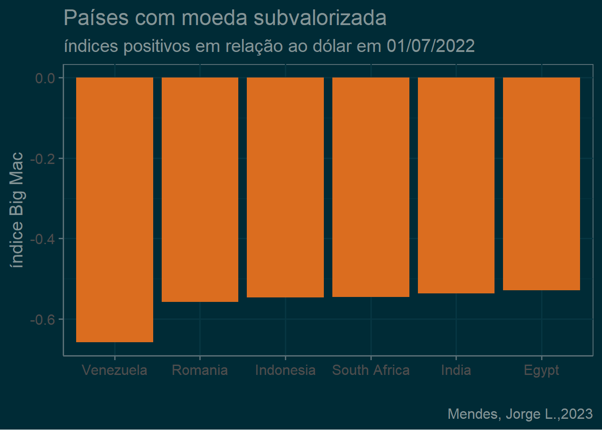
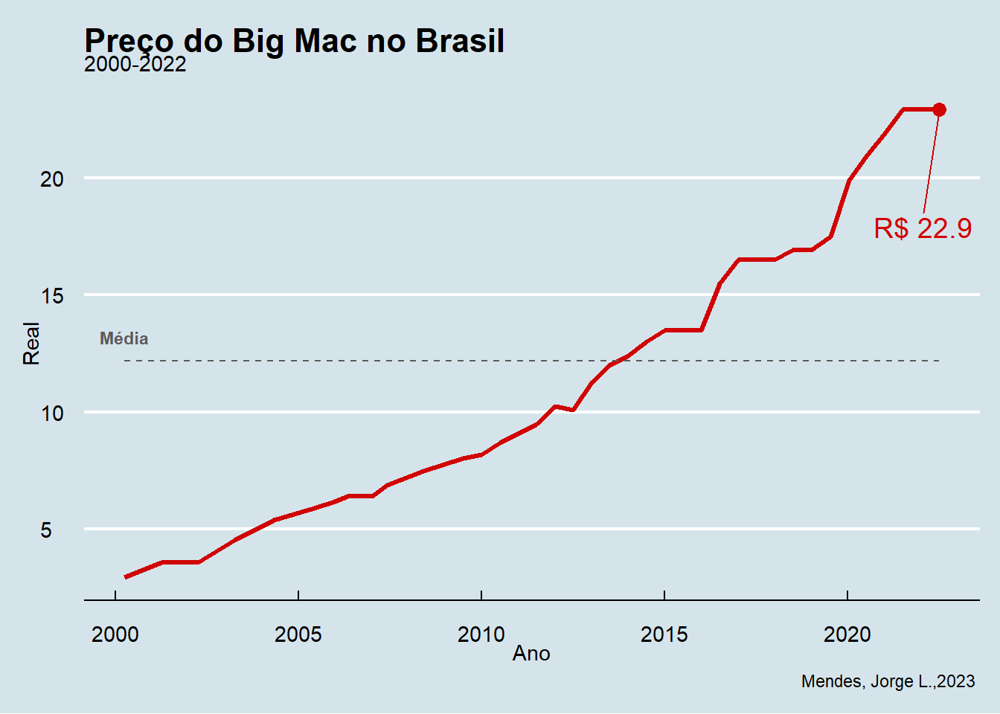
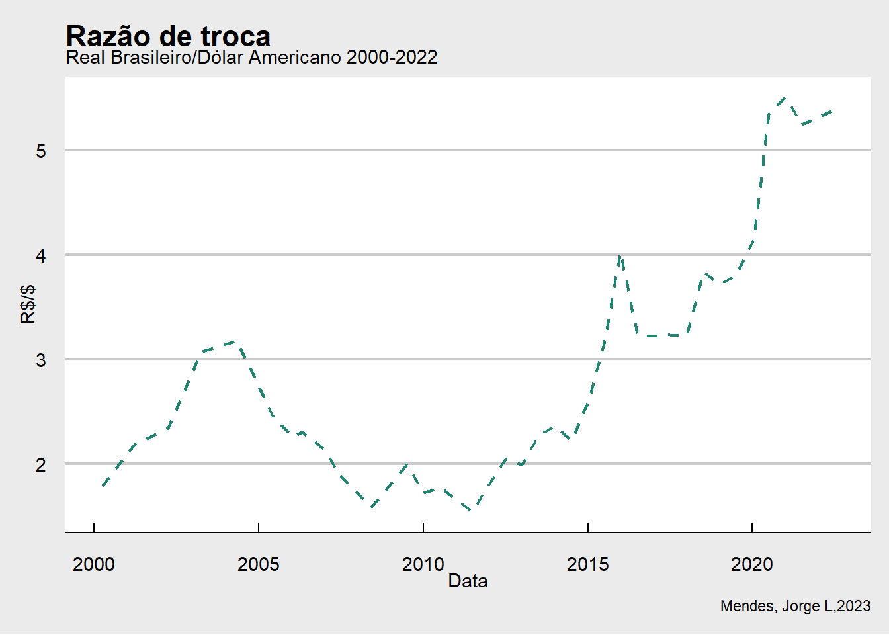

História
A revista britânica The Economics em 1986 criou o índice Big Mac (ou Big Mac Index). Seu objetivo era comparar o poder de compra de cada país utilizando o preço de um big mac .

O índice pode ser calculado pela seguinte fórmula:
\[ Índice\,Big\,Mac = \frac{Preço\, Big\, Mac\, no\, país}{ Preço\, Big\, Mac\, no\, EUA*taxa\, de\, câmbio }\, -1 \]
Um valor positivo significa que a moeda naquele momento está valorizada frente ao dólar americano, já um valor negativo indica que a moeda está subvalorizada. Os Estados Unidos da América recebe o valor de zero para seu índice, pois é a base de estudo.
Nesse post a moeda estudada foi o Dólar Americano, entretanto já existe dados comparando as outras moedas como o Euro, Libra Esterlina, yuan chinês, e entre outras moedas.
Esse índice permite também calcular a razão de troca ou paridade do poder de compra:
\[ Razão\,de\,troca = \frac{Preço\,Big\,Mac\,no\,país}{Preço\,em\, dolar} \]
Gostaria de mostrar uma biblioteca que conheci recentemente ,(Arnold 2021), ela da uma embelezada no seus gráficos.
Bibliotecas
Carregando os dados
Os dados podem ser encontrados no kaggle.
df <- read.csv("big_mac.csv")glimpse(df)Rows: 1,631
Columns: 19
$ date <chr> "2000-04-01", "2000-04-01", "2000-04-01", "2000-04-01", …
$ iso_a3 <chr> "ARG", "AUS", "BRA", "CAN", "CHE", "CHL", "CHN", "CZE", …
$ currency_code <chr> "ARS", "AUD", "BRL", "CAD", "CHF", "CLP", "CNY", "CZK", …
$ name <chr> "Argentina", "Australia", "Brazil", "Canada", "Switzerla…
$ local_price <dbl> 2.50, 2.59, 2.95, 2.85, 5.90, 1260.00, 9.90, 54.37, 24.7…
$ dollar_ex <dbl> 1.0000000, 1.6800000, 1.7900000, 1.4700000, 1.7000000, 5…
$ dollar_price <dbl> 2.500000, 1.541667, 1.648045, 1.938776, 3.470588, 2.4513…
$ USD_raw <dbl> 0.11607, -0.31176, -0.26427, -0.13448, 0.54937, 0.09436,…
$ EUR_raw <dbl> 0.05007, -0.35246, -0.30778, -0.18566, 0.45774, 0.02964,…
$ GBP_raw <dbl> -0.16722, -0.48645, -0.45102, -0.35417, 0.15609, -0.1834…
$ JPY_raw <dbl> -0.09864, -0.44416, -0.40581, -0.30099, 0.25130, -0.1161…
$ CNY_raw <dbl> 1.09091, 0.28939, 0.37836, 0.62152, 1.90267, 1.05023, 0.…
$ GDP_bigmac <dbl> 7803.329, 29144.877, 4822.739, 26087.329, 23872.716, 464…
$ adj_price <dbl> 1.922652, 2.301550, 1.869734, 2.247266, 2.207948, 1.8665…
$ USD_adjusted <dbl> 0.39117, -0.28335, -0.05696, -0.07698, 0.68172, 0.40514,…
$ EUR_adjusted <dbl> NA, NA, NA, NA, NA, NA, NA, NA, NA, NA, NA, NA, NA, NA, …
$ GBP_adjusted <dbl> -0.06626, -0.51898, -0.36704, -0.38047, 0.12876, -0.0568…
$ JPY_adjusted <dbl> 0.10096, -0.43285, -0.25369, -0.26953, 0.33090, 0.11201,…
$ CNY_adjusted <dbl> 0.97153, 0.01563, 0.33645, 0.30809, 1.38330, 0.99133, 0.…No Mundo
Atualmente que países possuim um índice positivo, ou seja, que possuim uma moeda valorizada em relação ao dólar americano?
df |> filter(USD_raw > 0, date %in% max(date)) |>
ggplot(aes(x =reorder(name,USD_raw),y = USD_raw)) +
geom_col(fill = "#236fa8") +
labs(title = "Países com moeda valorizada",
subtitle = "índices positivos em relação ao dólar em 01/07/2022",
x = "",
y = "índice Big Mac",
caption = "Mendes, Jorge L.,2023") +
theme(
plot.title = element_text(face = "bold",size = 14),
axis.text.x = element_text(angle = 45)
)
Quais países possuem o menor índice?
df |> filter( date %in% max(date)) |>
arrange(desc(-USD_raw)) |> head() |>
ggplot(aes(x =reorder(name,USD_raw),y = USD_raw)) +
geom_col(fill = "#db6d1f") +
labs(title = "Países com moeda subvalorizada",
subtitle = "índices positivos em relação ao dólar em 01/07/2022",
x = "",
y = "índice Big Mac",
caption = "Mendes, Jorge L.,2023") +
theme(
plot.title = element_text(face = "bold",
size = 14),
axis.text.x = element_text(angle = 45)
)+
theme_solarized(base_size = 15, light = FALSE)
Situação do Brasil.
Br <- df |> filter(name == "Brazil")
#últimas 5 linhas
Br|>
tail() |>
select(1,4:8) |>
knitr::kable(col.names =
c("Data","País",
"Preço Local","Razão de Troca",
"Preço Dolar","Índice(dólar)"),"pipe")| Data | País | Preço Local | Razão de Troca | Preço Dolar | Índice(dólar) | |
|---|---|---|---|---|---|---|
| 32 | 2020-01-14 | Brazil | 19.9 | 4.14190 | 4.804558 | -0.00320 |
| 33 | 2020-07-01 | Brazil | 20.9 | 5.34045 | 3.913528 | -0.18806 |
| 34 | 2021-01-01 | Brazil | 21.9 | 5.50460 | 3.978491 | -0.18640 |
| 35 | 2021-07-01 | Brazil | 22.9 | 5.24865 | 4.363027 | -0.11500 |
| 36 | 2022-01-01 | Brazil | 22.9 | 5.31000 | 4.312618 | -0.14432 |
| 37 | 2022-07-01 | Brazil | 22.9 | 5.39175 | 4.247230 | -0.17530 |
#convertendo a coluna para data
Br$date <- lubridate::as_date(Br$date)Podemos analisar a evolução temporal do preço.
Grafico_base <- Br |> ggplot() +
geom_line(aes(x=date,y =local_price),
linewidth = 1.2,
color ="#d10404" ) +
geom_line(aes(x=date,y = mean(local_price)),
linetype =2,
color ='#5c5a5a') +
geom_point(aes(x=max(date),y = max(local_price)),
color ='#d10404',
size = 3)
Max_price <- Br |> filter(date %in% max(date)) |>
mutate(label = glue::glue("R$ {round(local_price,2)}"))
Grafico_base +
labs(y = 'Real',
x ='Ano',
title = "Preço do Big Mac no Brasil",
subtitle = "2000-2022",
caption = "Mendes, Jorge L.,2023 ") +
annotate('text',
x=min(Br$date),
y =13.2,
label = "Média",
colour = "#5c5a5a",
size = 3,
fontface = 'bold') +
ggrepel::geom_text_repel(
data = Max_price,
aes(x = date,y = local_price,label = label),
size = 5,
color = "#d10404",
nudge_y = -5,
nudge_x = 0,
min.segment.length = 0) +
theme(
panel.grid.minor = element_blank(),
panel.grid.major = element_blank(),
plot.title = element_text(face = "bold",size = 14)) +
theme_economist()
Podemos analizar o comportamento da razão de troca ao longo tempo.
Br |>
ggplot(aes(x = date,y =dollar_ex)) +
geom_line(color = "#218572", linetype = 2, linewidth = 0.8) +
labs(title ="Razão de troca",
subtitle = "Real Brasileiro/Dólar Americano 2000-2022",
caption = "Mendes, Jorge L,2023",
x = "Data",
y = "R$/$") +
theme(
plot.title = element_text(face = "bold",size =14)
) +
theme_economist_white()